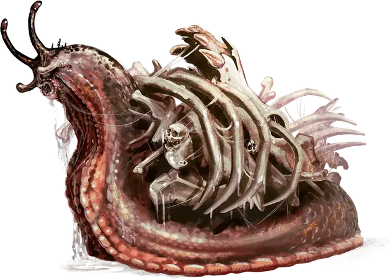

Костяной слизень
Bone Whelk
Большой Монстр, без мировоззрения

Класс Доспеха 12 (природный доспех)
Хиты 27 (5к10)
Скорость 15 футов, лазая 15 футов
| мод | спас | ||
|---|---|---|---|
| СИЛ | 10 | +0 | +0 |
| ЛОВ | 5 | −3 | −3 |
| ТЕЛ | 11 | +0 | +0 |
| мод | спас | ||
|---|---|---|---|
| ИНТ | 6 | −2 | −2 |
| МДР | 9 | −1 | −1 |
| ХАР | 3 | −4 | −4 |
Чувства тёмное зрение 60 футов, пассивное Восприятие 9
Опасность 1/4 (50 опыта)
Бонус мастерства +2
Особенности
Паучье лазанье. Слизень может лазать по сложным поверхностям, включая потолки, без совершения проверок характеристик.
Клейкий. Костяной слизень может приклеить к себе объекты Среднего размера или меньше. Существо размером не больше Среднего, коснувшееся костяного слизня, становится захваченным им (Сл высвобождения 10).
Предсмертный вопль. Когда костяной слизень умирает, он издаёт леденящий душу вопль, слышимый на расстоянии до 120 футов. Вопль заставляет немагическую органическую материю в пределах 10 футов от слизня гнить. Каждое существо в пределах 10 футов от умирающего костяного слизня получает 9 (2к8) урона некротической энергией.
Действия
Укус. . Рукопашная атака оружием: +2 к попаданию, досягаемость 5 футов, одно существо. Попадание: 4 (1к8) колющего урона.
Описание
Это крупные моллюски, источающие клейкую жидкость, чтобы прилеплять к себе черепа, кости и прочий мусор для защиты. Они ползают по обломкам в поисках органической материи на обед, прилепляясь к обломкам стен, полов и потолков в поисках укрытия от пронзительных ветров и голодных вроков [vrock].
Костяные слизни слишком медленные, чтобы сбежать из боя, а потому дерутся насмерть.
Умирающий костяной слизень испускает вопль, на который с шансом 50% слетятся вроки [vrock] и атакуют всех существ без разбора, включая костяных слизней.